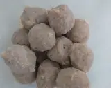
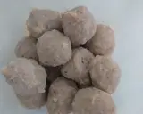
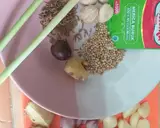
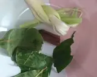
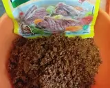
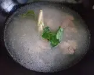
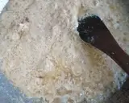
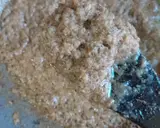
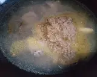

Resep Bakso Kuah Coto Makassar
Portofolio
About Me
Contact
- Bahan-Bahan :
- 300gr daging sapi
- 1,5 liter air cucian beras ke 2-3
- 1 batang sereh
- 2 lembar daun salam
- 2 lembar daun jeruk
- 5 cm kayu manis
- Bumbu Halus :
- 10 siung bawang merah
- 8 siung bawang putih
- 4 butir kemiri (sangrai)
- 1 sdt jintan (sangrai)
- 1 sdt ketumbar (sangrai)
- 4 cm jahe
- 1/2 bulatan pala
- 1/2 bks merica bubuk (ladaku)
- 1 ruas lengkuas muda
- 2 btg sereh (potong kecil-kecil dulu)
- 2 buah bunga lawang (tambahan saja)
- 5 buah kapulaga (tambahan saja)
- Bahan Lain :
- 200gr kacang tanah goreng (haluskan)
- garam,gula,pasir,kaldu,bubuk rasa sapi
- Minyak untuk menumis
- Bahan Pelengkap :
- Mie yang telah direbus
- Bakso sapi
- Daun Bawang
- Jeruk Nipis
- Sambal
Cara Membuat :
- Siapkan semua bahan mulai dari bakso sapi daging. Sisihkan
 

- Haluskan semua bahan bumbu halus ya mom (sampai benar benar halus) Sisihkan.



- Cuci bersih daging kemudian rebus dengan air cucian beras. Tunggu sampai kotoran daging keluar. Matikan kompor. Saring kaldu ambil daging yang telah direbus. (saya menggunakan metode 30.5.7) Rebus kaldu yang sudah disaring kembali, beri sereh, daun salam, daun jeruk serta kayu manis. Kecilkan api.

- Tumis bumbu halus dengan sedikit minyak sampai wangi dan benar benar matang (warna bumbu terlihat mengkilat dan sedikit kecokelatan)



- Masukkan tumisan bumbu halus kedalam rebusan kaldu. Masukan juga kacang tanah halus. Beri garam, gula pasir dan kaldu bubuk. Tunggu sampai mendidih. Koreksi rasa.
- Cemplungkan bakso yang mau disajikan. Siapkan mie yang telah di seduh.
- Tata di mangkok : Mie yang telah direbus, bakso dan daging, beri kuah coto, taburi daun bawang. Sajikan dengan persan jeruk nipis dan sambal. Bakso Kuah Coto Makassar siap dinikmati 😍
Click for more detail !
Selamat Mencoba 😍😍😍